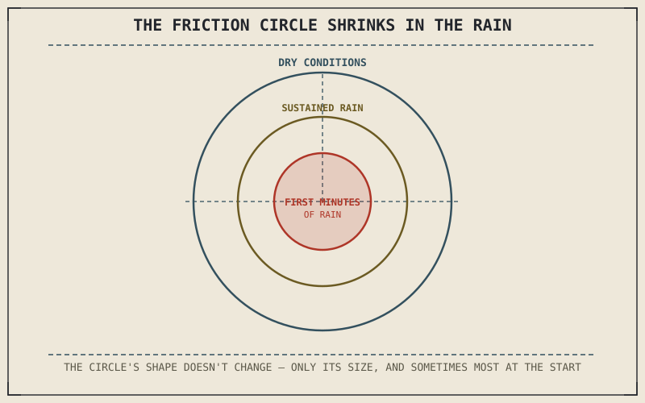

Every friction-circle calculation this book has made — braking distance, cornering lean angle, trail braking's combined limit — assumed a dry, clean road surface without ever stating that assumption directly. Rain removes it, shrinking the same friction circle every technique in this part has been built around, without shrinking a rider's instincts to match unless those instincts are deliberately recalibrated.
Chapter 9.10 closed by naming rain and reduced grip as this chapter's subject. This chapter covers it.
Why Rain Shrinks the Circle Chapter 6.4 Described
Chapter 6.6 explained that tread grooves exist to displace water and prevent hydroplaning, and that even a well-designed tread has real limits to how much water it can move at a given speed. Beyond those limits, and even within them, a wet road surface simply offers less friction between rubber and pavement than a dry one, directly shrinking the friction circle Chapter 6.4 established governs available grip — every braking, cornering, and accelerating technique this part has covered still works the same way in the rain, but the circle they're all operating inside is measurably smaller, and every margin this book assumed in dry conditions is correspondingly reduced.
The First Few Minutes Are the Worst
Accumulated oil, rubber, and debris sit on a dry road surface and don't wash away until rain has been falling long enough to actually rinse them off, which means the first fifteen to twenty minutes of rainfall after a dry spell often produce less grip than sustained, heavier rain later in the same storm. This is a genuine, physical reason to treat the very start of rain with particular caution beyond simply "it's raining, be careful" — the friction circle Chapter 6.4 described is often smaller in those first minutes than it will be an hour into the same rainfall, precisely opposite what intuition about heavier rain being worse might suggest.
The friction circle this book has used throughout Part VI, VII, VIII, and IX doesn't change its shape in the rain — it just shrinks, sometimes most severely in the first few minutes of a storm, which is exactly when a road looks only mildly wet and least alarming.

A friction circle shown shrinking from its dry-condition size to a smaller wet-condition size, with a further-reduced circle labeled for the first minutes of rainfall before accumulated road residue has washed away.
Adjusting Technique, Not Just Speed
A smaller friction circle means every technique this part has covered needs a larger safety margin against its edge, applied consistently rather than as a single blanket instruction to "slow down." Braking, from Chapters 9.3 and 9.4, needs gentler, earlier application, since threshold braking's already-narrow margin for error shrinks further with less available grip; cornering lines from Chapter 9.5 benefit from choosing an even larger effective radius than dry conditions would demand, since Chapter 8.3's lean-angle math still applies but now against a smaller grip budget; and following distance from Chapter 9.9 needs to expand beyond even the highway recalculation Chapter 9.10 described, since stopping distance grows further as available friction shrinks.
A Common Misconception, Cleared Up Early
It's a common assumption that riding safely in the rain simply means going slower everywhere, treating reduced speed as a universal, sufficient adjustment. Speed reduction helps, but the specific adjustments this chapter described — earlier, gentler braking, wider cornering lines, extended following distance, particular caution in a storm's first minutes — each address a distinct way the friction circle has shrunk, and a rider who only slows down without adjusting technique in these specific ways is still operating closer to a smaller circle's edge than intended, however cautious the overall pace feels.
Where This Leads
Rain removes visual information along with grip. Riding at night removes visual information for a different reason, without necessarily reducing grip at all. Chapter 9.12 turns to that distinct set of demands next.
Key Concepts to Remember
- Rain shrinks the same friction circle every technique in this part depends on, without changing the underlying mechanics of how braking, cornering, or accelerating work.
- The first fifteen to twenty minutes of rain after a dry spell often produce less grip than sustained rain later, due to accumulated surface residue not yet washed away.
- Riding safely in the rain requires specific technique adjustments to braking, lines, and following distance, not just an overall reduction in speed.
Cross-References
| ← Ch. 6.4 | Established the friction circle governing available grip; this chapter shows rain shrinking that same circle without changing its underlying shape. |
| ← Ch. 6.6 | Explained tread grooves displacing water up to a real limit; this chapter shows what happens once conditions approach or exceed that limit. |
| ← Ch. 9.9 | Established following distance sized to stopping distance; this chapter shows that distance needing further expansion as grip shrinks in the rain. |
| → Ch. 9.12 | Covers riding at night, where visual information is reduced for a different reason than grip is reduced here. |